该实验以官方提供的Wireshark捕获文件为基础分析。
请访问官网获取文件：[课件地址]( http://gaia.cs.umass.edu/wireshark-labs/wireshark-
traces.zip)
实验1
操作部分
实验2
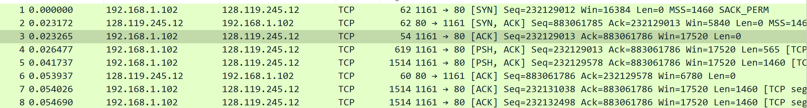
1.将文件传输到gaia.cs.umass.edu的客户端计算机使用的ip地址和tcp端口号是什么？
源ip：192.168.1.102；
tcp端口号：1161
2.gaia.cs.umass.edu的ip地址是什么？在那个端口号上发送和接受此链接的tcp却段？
ip：128.119.245.12；
在端口号：80
3.客户端计算机将文件传输到gaia.cs.umass.edu所使用的ip地址和tcp端口号是多少？
ip：192.168.1.102；
端口号：1161
实验3
4.用于在客户端计算机和gaia.cs.umass.edu之间启动TCP链接和TCP SYN区段的序列号是什么？将区段表示为SYN区段的区段有什么功能？
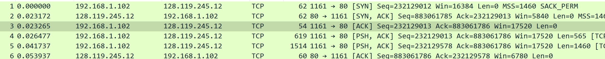
序列号：232129012；
SYN区段表明客户端发起连接，是三次握手中的第一次握手。
5.gaia.cs.umass.edu 发送给客户端计算机以回复SYN的SYNACK区段的序列号是多少？SYNACK区段中的Acknowledgement栏位的值是多少？gaia.cs.umass.edu是如何确定此Acknowledgement的数值的？在将区段标识为SYNACK区段的区段在连线中有什么功能？
发给客户端计算机以回复SYN的SYNACK序列号：883061785，见题4图；
flag中看到ack栏位值为：1；
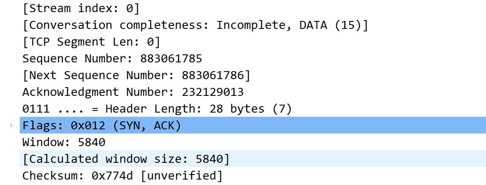
SYNACK区段在连线中表示服务器接受客户端发起的TCP连接，并为之设置接手缓存及变量；
服务器根据客户端发送的SYN区段的序列号确定acknowledgement的值，为客户sequence+1；
SYNACK区段是TCP三次握手中的第二次握手，表明服务器接受连接。
6.包含HTTP POST命令的TCP区段的序列号是多少？
请注意，为了找到POST命令，您需要深入了解Wireshark窗口底部的数据包内容子段，在其DATA栏位中查找带有“POST”的区段。
序列号：232129013。
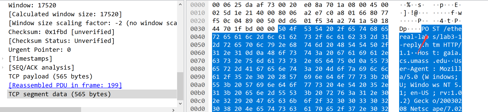
7.将包含HTTP POST的TCP区段视为TCP连接中的第一个区段。
在这个TCP连线中前六个TCP区段的序列号是什么(包括包含HTTP POST 的段)？
每区段发送的时间是什么时候?
收到的每个区段的ACK是什么时候?鉴于发送每个TCP区段的时间与收到确认的时间之间的差异，六个区段中每个区段的RTT值是多少?
收到每个ACK后，EstimatedRTT值（参见本节中的第3.5.3节，第242页）是什么？
假设第一个EstimatedRTT 的值等于第一个区段的测量RTT，然后使用课本第242页的EstimatedRTT公式计算所有后续区段。(译注:中译本的页数可能不同)。
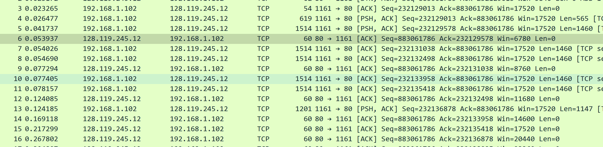
(SEQ:序列号 SendTime：发出时间 LEN：长度)
以第一个为例计算：
(1)SEQ：232129013 SendTime：0.026477 LEN：565
ACK-SEQ：883061786 ACK-Time：0.053937 RTT：0.053937-0.026477= 0.0274600
RTT可通过查看ack包，也可以自己手动计算
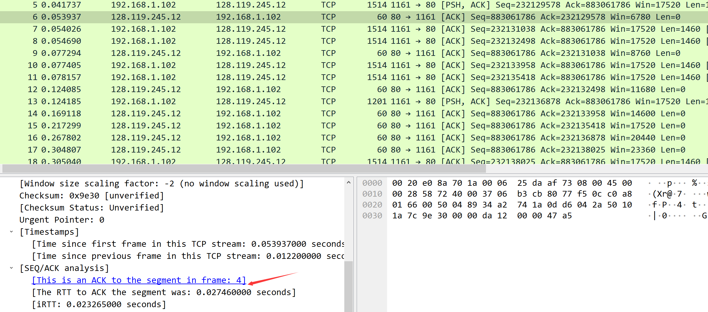
结果：
第一个E-RTT取RTT值，后面TCP段的E-RTT如上计算
| No | SEQ | SendTime | ACK-Time | RTT | Estimated RTT | LEN |
|---|---|---|---|---|---|---|
| 1 | 232129013 | 0.026477 | 0.053937 | 0.02746 | 0.02764 | 565 |
| 2 | 232129578 | 0.041737 | 0.077294 | 0.035557 | 0.028472125 | 1460 |
| 3 | 232131038 | 0.054026 | 0.124085 | 0.070059 | 0.033670484375 | 1460 |
| 4 | 232132498 | 0.054690 | 0.169118 | 0.114428 | 0.043765173828125 | 1460 |
| 5 | 232133958 | 0.077405 | 0.217299 | 0.139894 | 0.05578127709960937 | 1460 |
| 6 | 232135418 | 0.078157 | 0.267802 | 0.189645 | 0.07251424246215821 | 1460 |
8.前六个TCP区段的长度是多少
上题回答给出
9.对于整个跟踪包，收到的最小可用缓冲区空间量是多少？缺少接收器缓冲区空间是否会限制发送方传送TCP区段？
接收窗口最小为5840，缺少接收器缓冲会限制发送方传送TCP区段，发送方的发送收拥塞控制中的拥塞窗口以及接收方的缓冲接收窗口的影响；但包中实际的接收窗口远大于发送的报文数量，故而不会影响。
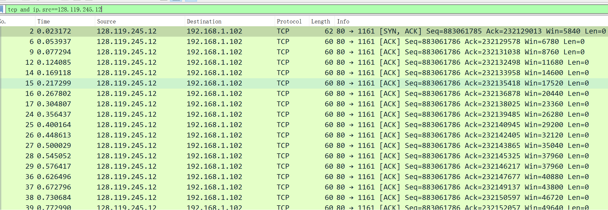
10.在跟踪文件中是否有重传的区段？为了回答这个问题，您检查了什么（在跟踪包中）？
使用ip.src==192.168.1.102查看客户端发出的所有保温，发现序号一直在增加，因此没有重传报文。
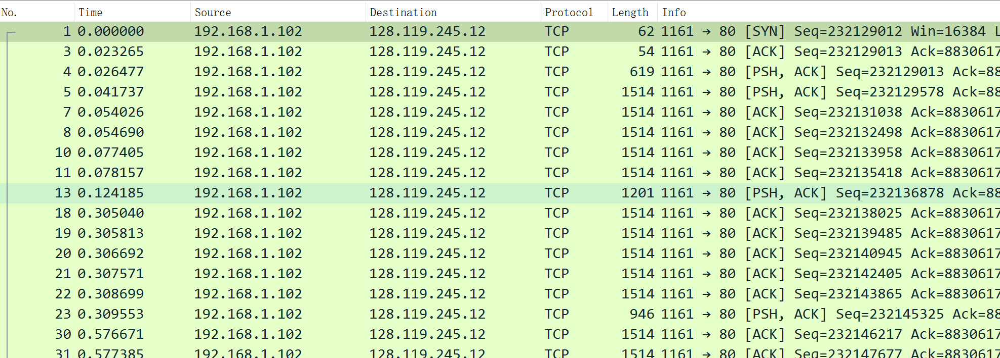
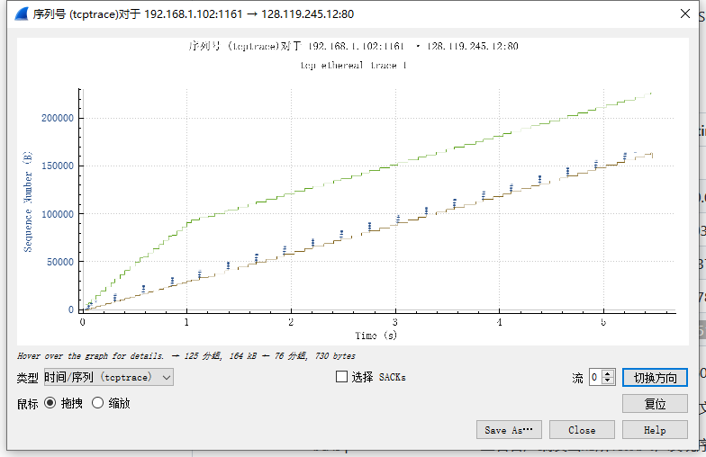
11.接收器通常在ACK中确认多少数据？您是否可以识别接收方每隔一个接收到的区段才发送确认的情况？
经对比接收方ACK与发送方的SEQ，接收方接收一个报文即发送一个ACK，没有累计确认。
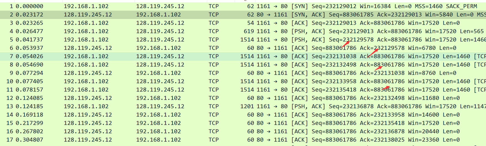
12.TCP连接的吞吐量（每单位时间传输的字节数）是多少？解释你如何计算这个值。
 约等于31.13151847590831KB/s
13.使用时序图（Stevens）绘图工具查看从客户端发送到服务器的区段的序列号与时间关系图。您能确定TCP慢启动阶段的开始和结束位置，以及拥塞避免开始的位置？评论测量数据与我们在文本中研究的TCP的理想化行为的不同之处。
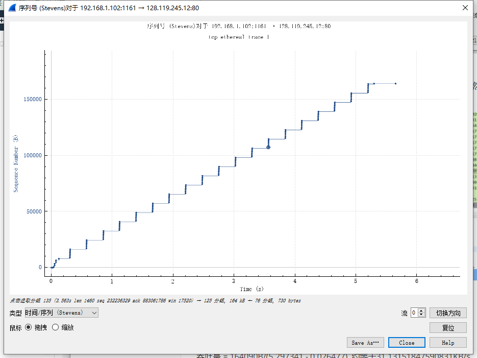
感觉0-0.1秒区间是慢启动，0.1后是拥塞避免开始的位置，但是拥塞避免的窗口没有增大。
我们在文本中研究的TCP的理想化行为中拥塞避免的窗口是有增大的
If you like this blog or find it useful for you, you are welcome to comment on it. You are also welcome to share this blog, so that more people can participate in it. If the images used in the blog infringe your copyright, please contact the author to delete them. Thank you !